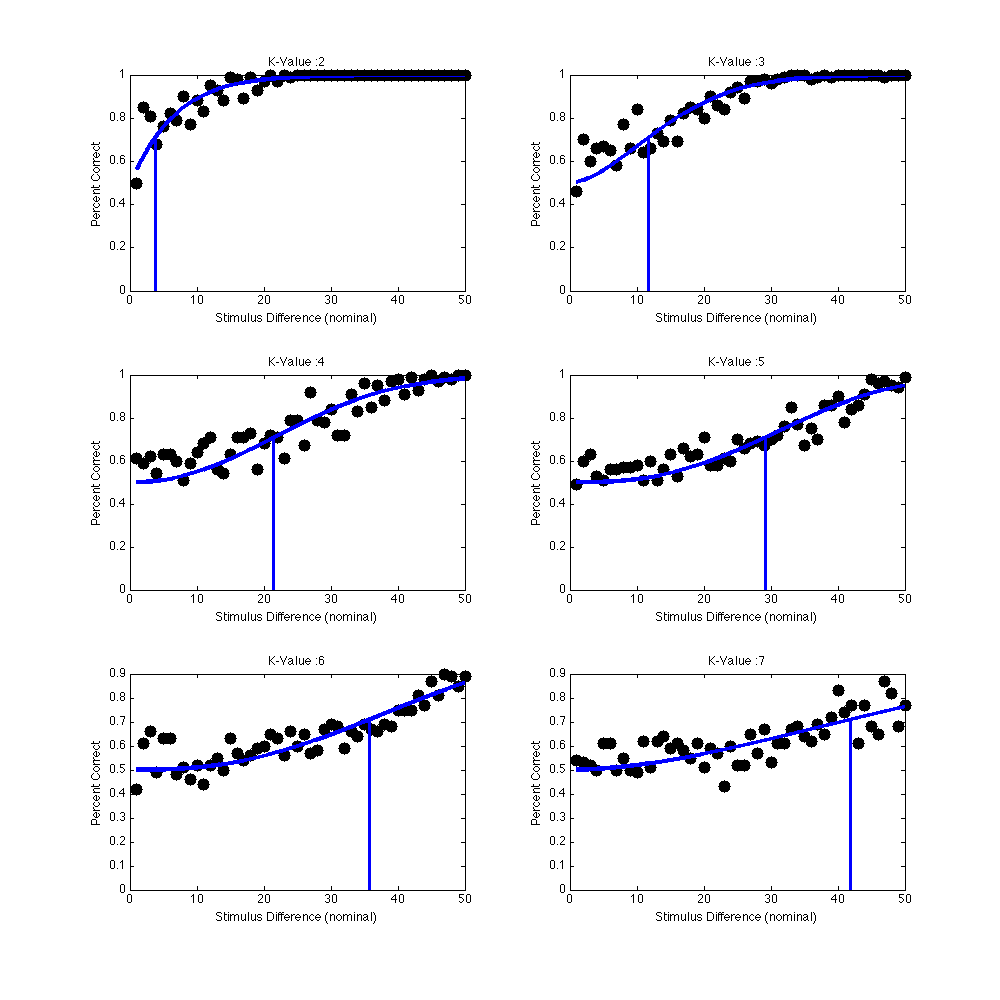
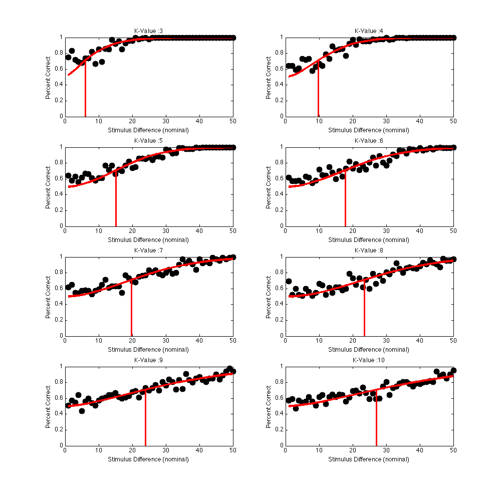
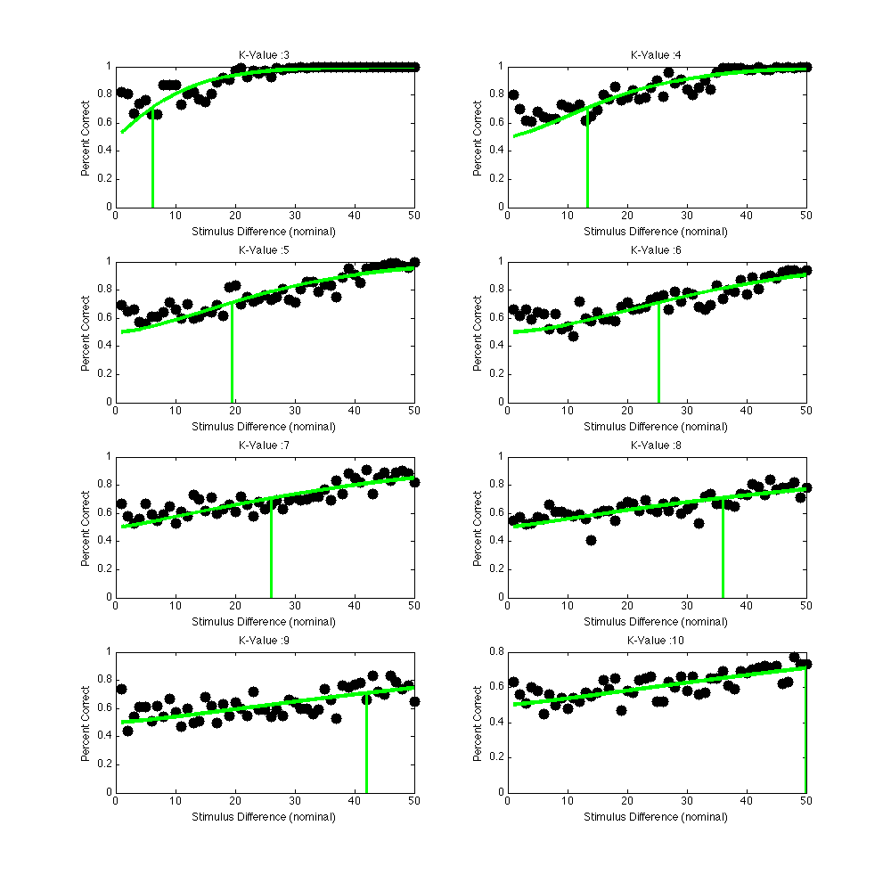
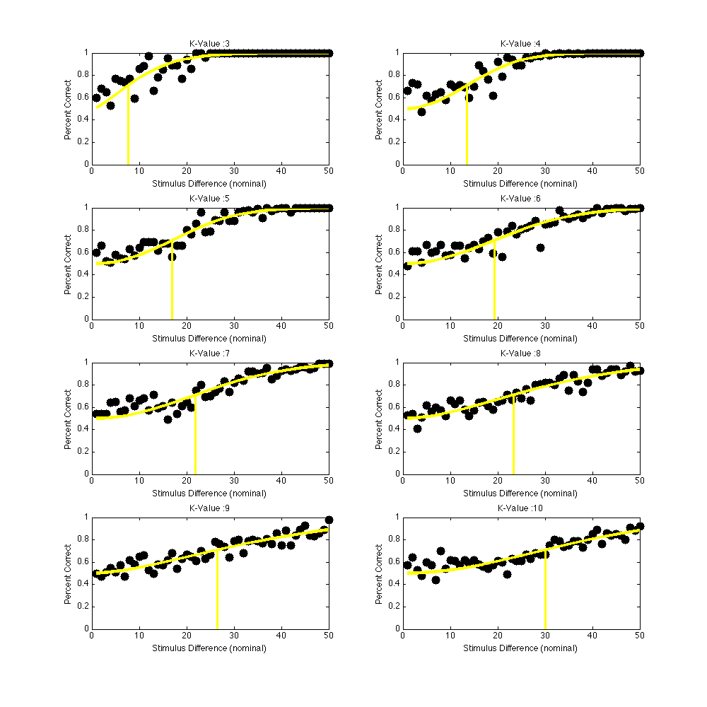
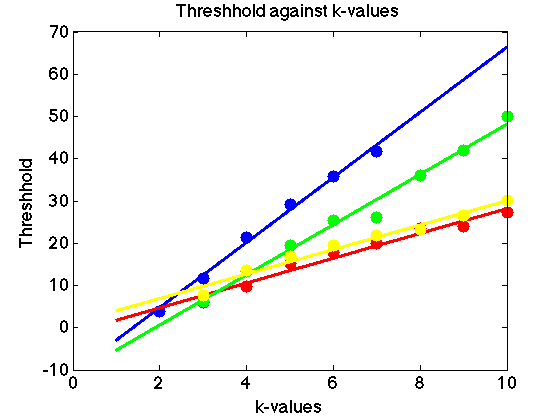

Contents
- Clear and initialize
- Control of what gets done in this function
- Get our project toolbox on the path
- Make sure preferences are defined
- Parameters of the calculation
- Convert the images to cached scenes for more analysis
- Convert cached scenes to optical images
- Create data sets using the simple chooser model
- Calculate threshholds using chooser model data
function runAllCalculations
% runAllCalculations % % Run the full set of calculations in the BLIlluminationDiscrimination % project, for one set of parameters. % % Typically, we will only execute pieces of this at any given time, because % certain parts are cached and need not be redone each time through. But, % this documents for us the flow of the whole calculation, and also lets us % gather all of the parameters together in one place. % % 4/29/15 dhb, xd Wrote it.
Clear and initialize
close all; ieInit;
Control of what gets done in this function
CACHE_SCENES = true; forceSceneCompute = false; CACHE_OIS = true; forceOICompute = false; RUN_CHOOSER = false; forceComputeAllChooser = true;
Get our project toolbox on the path
myDir = fileparts(mfilename('fullpath')); pathDir = fullfile(myDir,'..','Toolbox',''); AddToMatlabPathDynamically(pathDir);
Make sure preferences are defined
setPrefsForBLIlluminationDiscriminationCalcs;
Parameters of the calculation
We'll define this as a structure, with the fields providing the name of what is specified. These fields could later be viewed as key-value pairs either for override by key-value calling arguments or for saving out in some sensible manner in a database. We could also run some sort of check on the structure at runtime to make sure our caches are consistent with the current parameters being used.
% Folder list to run over for conversions into isetbio format calcParams.cacheFolderList = {'Standard', 'BlueIllumination', 'GreenIllumination', ... 'RedIllumination', 'YellowIllumination'}; % Specify how to crop the image. We don't want it all. calcParams.cropRect = [550 450 40 40]; % Use [450 350 624 574] for entire non-black region of our images % Specify the number of times to simulate a decision in the chooser calcParams.chooserIterations = 100;
Convert the images to cached scenes for more analysis
if (CACHE_SCENES) convertRBGImagesToSceneFiles(calcParams,forceSceneCompute); end
Will subsample SPDs with a resolution of 8 nm Changing wave and interpolating SPD, for consistency Display object generation took 0.0 seconds
Convert cached scenes to optical images
if (CACHE_OIS) convertScenesToOpticalimages(calcParams, forceOICompute); end
Create data sets using the simple chooser model
if (RUN_CHOOSER) sensorImageSimpleChooserModel(calcParams, forceComputeAllChooser); end
Calculate threshholds using chooser model data
Note that the data set generated below is using the volt data from the sensor images. The photon data set is still being generated.
threshholdCalculation;    